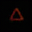

03 · Geometry & structured transforms
Finding variation and testing image changes.
Shape labels supplied · color labels withheld
Find color-related variation from examples.
The experiment uses triangles, squares, pentagons, and hexagons in different colors and stroke thicknesses. It supplies the shape labels, then compares examples of the same shape. A statistical method called independent component analysis (ICA) looks for recurring patterns in those differences.

Comparing within each shape improved alignment with the color reference from 0.716 to 0.826, without color labels.
The recovered components contain traces of shape outlines, so adding a component to another image can leave ghost outlines. Color is only partially separated from shape.
One synthetic-data run. Both methods use PCA and ICA; only the within-shape method receives shape labels. Procedure and measurements →
A separate color-rule control fits a predefined RGB rotation from paired images and tests it on different shapes.
Digit labels → patterns of variation
Compare examples within the same class.
Comparing one 3 with another holds the digit label fixed while exposing changes in appearance. A covariance calculation finds the largest such variations within the training classes.

Does using this geometry change classification?
A classification test removes the selected variation directions before predicting the digit label. When training blur is misleadingly associated with the label, nearest-mean accuracy rises from 74.0% to 82.3%. With independent blur it falls from 93.2% to 87.4%.
The study compares removal and weighting with LDA, logistic regression, nearest neighbors, and paired blur augmentation. Logistic regression reaches 93.2% in the correlated-blur setting; paired augmentation reaches 97.3%. Full comparison and inputs →
Neural network · learned image coordinates
How does a trained model represent brightness?
A neural network compresses an image into 32 numbers and reconstructs it. A separate fit learns how to scale and shift those coordinates for a requested brightness change, then tests the rule on new images.
Request a 1.5× brighter image.
The target multiplies every RGB intensity by 1.5. Compare the model’s ordinary reconstruction with its reconstruction after the brightness edit. The model can blur an image even when no edit is requested.


Compare both model outputs with the brighter target.
The images share the same display scale; pixel values are clipped to [0, 1] for display.
Compared with simply brightening the ordinary reconstruction, the learned edit gave almost the same image error within the training brightness range and higher error outside it.
Does the rule transfer to other images and multipliers?
A scaling rule around a learned center
- z
- Encoded image
- r
- Brightness multiplier
- c, α
- Center and exponent fitted from pairs
A gain and offset fitted from paired images at a 1.5× brightness change define the rule. The test then applies that rule to new images at several brightness multipliers.

For these encoders, a scaling rule predicted brightness changes more closely than a shared additive shift.